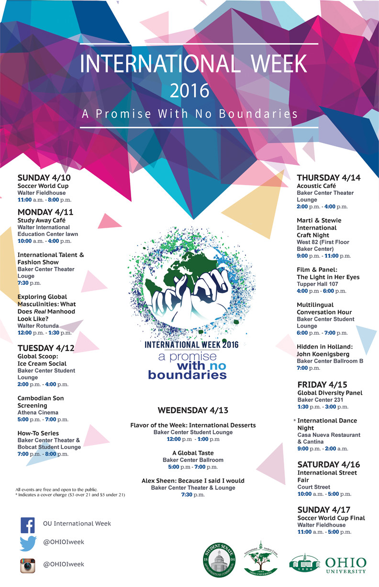
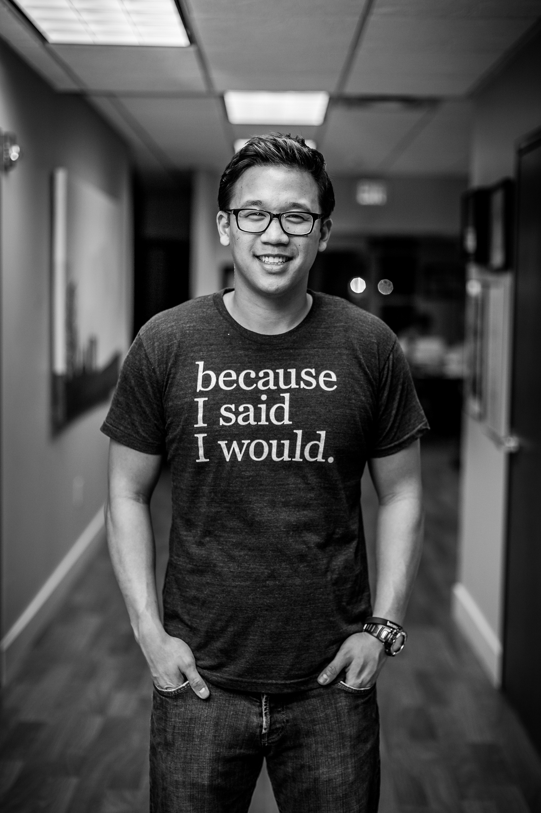

Schedule of Events
April 10th - 16th, 2016
The offical 2016 I-week calendar

Alex Sheen
The 2016 Keynote Speaker
April 13, 7:30 p.m. Baker Center Theater

Alex's Biography
Alex Sheen is the founder of because I said I would, a social movement and nonprofit dedicated to bettering humanity through promises made and kept. Sparked by the loss of his father, Alex and his organization send "promise cards" to anyone anywhere in the world at no cost. Alex is someone who truly honors commitment. He once walked over 240 miles across the entire state of Ohio in 10 days to fulfill a promise. In just two years, because I said I would has sent over 3.15 million promise cards to over 153 different countries.
The promises written on these cards have made headlines around the world. His charitable projects and awareness campaigns have been featured on ABC World News with Diane Sawyer, CNN, The Today Show, NPR, The Los Angeles Times and many other programs.
More information about Alex can be seen on
http://becauseisaidiwould.com/alexsheen.